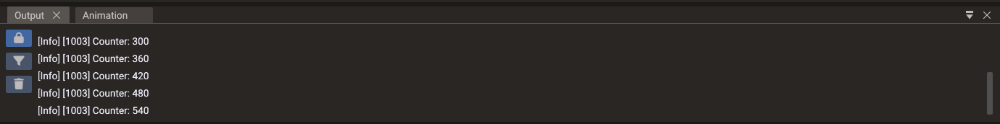

Scripting¶
Quantum supports two scripting languages: Lua for fast iteration and flexible scripting, and C++ for full native performance. You can use either one or combine both in the same project.
Lua vs. C++¶
| Lua | C++ | |
|---|---|---|
| Iteration speed | Very fast — no recompile needed | Requires a build step |
| Runtime performance | High | Maximum (native) |
| Compilation | Interpreted at runtime | Compiled at build time |
| Best for | Gameplay logic, prototyping, glue code | Performance-critical systems |
A common workflow is to prototype in Lua, then move hot paths to C++ when you need the extra performance.
Editor-era scripting model¶
Current Quantum projects usually attach behavior to entities with ScriptComponent.
Each ScriptComponent can contain multiple script entries. A script entry stores the
script type, paths, class/module name, enabled state, Properties window fields, and runtime
instance pointer.
| Script type | Use it for |
|---|---|
SUBCLASS |
C++ class derived from the entity's object wrapper (Object, Mesh, Camera, Terrain, …) |
SCRIPT_CLASS |
C++ class derived from ScriptBase |
SCRIPT_LUA |
Lua module returning a script table |
The difference between the two C++ types trips people up: a Subclass is the object
(it inherits Camera/Mesh/Object/… and you call wrapper methods on this), while a
Script Class only references the entity through ScriptBase. See
C++ Subclass vs. C++ Script Class for
the full breakdown and player-controller guidance.
See Creating Scripts, Events, and Script Properties for the full workflow.
Entry points¶
Each project has entry points for both languages:
- C++ — the engine calls your
init()function when the game starts. - Lua — the main Lua script runs at startup and can require other Lua files.
Choosing one entry point
If both Lua and C++ call setScene(), the C++ call runs last and overrides the Lua
one. To disable an entry point, build with NO_CPP_INIT or NO_LUA_INIT:
- CMake: add
-DNO_CPP_INIT=1(or-DNO_LUA_INIT=1) to your configure step.
See Export Window for full details.
For editor-authored projects, the start scene and exported scene factories are usually more important than hand-written startup code. Use entry points for engine-level setup, not for recreating an entire editor-authored scene by hand.
The Engine API¶
The static Engine object is your main entry into the runtime. Common calls include:
Engine.setCanvasSize(1000, 480) -- set the rendering canvas size
Engine.setScene(scene) -- set the active scene
The same methods are available in C++ through Engine:: static methods.
Lua bindings¶
Quantum uses LuaBridge to expose the engine API to Lua. The binding layer registers:
| Binding group | Examples |
|---|---|
| Core | Engine, Scene, SceneManager, BundleManager, Input, System |
| ECS | Entities and built-in component types |
| Objects | Object, Sprite, Mesh, Model, Camera, Light, Light2D, Occluder2D, Lines, Points, Sound |
| Actions | Action, Animation, SpriteAnimation, Particles, Ease |
| Math | Vector2, Vector3, Vector4, Matrix3, Matrix4, Quaternion, Ray, AABB, Rect, Plane |
| I/O | File, UserSettings, memory data helpers |
Most C++ enums are mirrored into Lua namespaces, such as Scaling.FITWIDTH,
BodyType.DYNAMIC, and GraphicBackend.METAL.
Script components¶
Attach ScriptComponent to an entity when behavior should live with that entity. The
component supports C++ subclasses, C++ ScriptBase instances, and Lua script modules.
Use script components for reusable entity behavior such as player controllers, enemy
AI, interactive doors, or UI widgets.
Exposing values to the editor¶
C++ script properties are parsed by the editor and displayed in the Properties window when they use the supported property annotations. This lets designers tune values without editing source code. Keep exposed properties small and serializable: numbers, booleans, strings, colors, vectors, resource paths, and entity references are the best fit.
Logging¶

Use Log for runtime diagnostics in C++:
Log::print("Player spawned");
Log::warn("Missing optional texture: %s", path.c_str());
Log::error("Failed to load level");
The same logging functions are exposed to Lua through the Log class. Regular Lua
print() also works for quick diagnostics:
require() and module paths¶
Lua require("foo") searches the virtual filesystem:
lua://lua/foo.lualua://foo.lua
Dots in module names map to directory separators (require("ui.menu") → lua/ui/menu.lua).
The lookup goes through Data, so packed Lua modules in a native export resolve the same
way as loose files.
Script component paths use the same lua:// prefix with the stored relative path.
Global helpers¶
| Function | Purpose |
|---|---|
RegisterEvent(self, event, methodName [, tag]) |
Subscribe to any FunctionSubscribe event |
RegisterEngineEvent(self, methodName [, tag]) |
Subscribe to Engine.onUpdate, etc. |
Reference¶
- Creating Scripts — editor workflow and lifecycle
- C++ Build Setup — compilers, CMake, and build troubleshooting
- Events — all event types and registration macros
- Script Properties —
DPROPERTYand Lua properties - API Index — complete class reference (C++ and Lua)